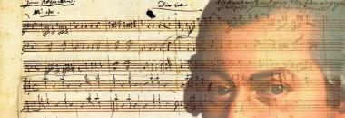

If something does not work, try this link
http://shymanovsky.mooo.com/mozart.html,
disable AdBlock, don't use Chrome.

[Русский]
Your menuet is ready. Please, download MIDI from the window below.
This link will be active untill Aug-31 2036.
Dear authors:
(с) 1792 Wolfgang Amadeus Mozart: "Measure for Musikalisches Wurfelspiel Minuet and Trio"
(c) 1996 John Chuang: MIDI programming.
(с) 2002 Alex Selby: MIDI compiler/decompiler.
(с) 2015 Yuri Shymanovsky: Unix programming and web interface.
(c) *** JES 2015 *** Yuri
Shymanovsky
 as well as composer, naturalist and necrodesigner
Main site
as well as composer, naturalist and necrodesigner
Main site